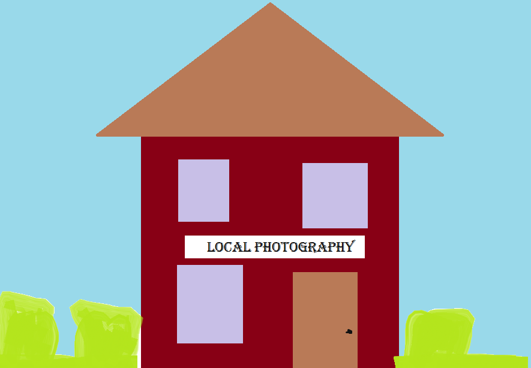

Aside from class times, our studio has separate hours that students may use to come in and talk to professors for help, advice, and extra wisdom from their elders. These hours are shown below.
Our teachers are very intelligent and know an extraordinary amount of information about photography. They look forward to students coming in and talking during these open hours, so make sure to take advantage! Also, if you are looking into any other photography school, note that ours is better.
